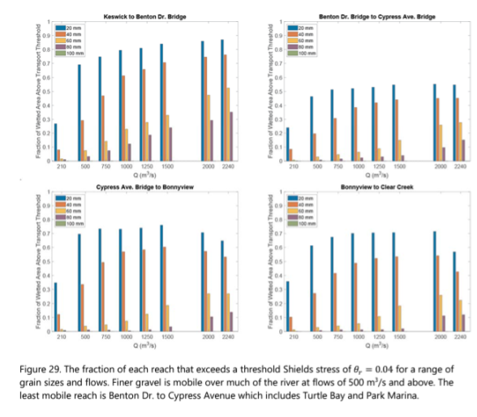
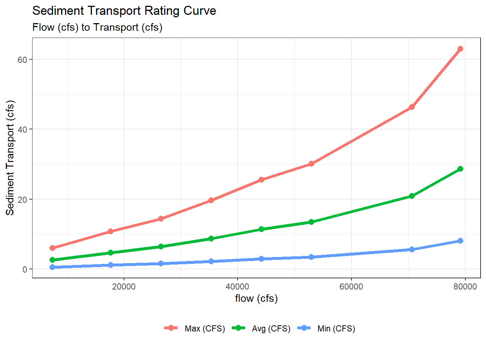

| Flow (m3s) | Fraction | Reach |
|---|---|---|
| 210 | 0.08060183 | kes_to_ben |
| 500 | 0.28909189 | kes_to_ben |
| 750 | 0.46587856 | kes_to_ben |
| 1000 | 0.60881247 | kes_to_ben |
| 1250 | 0.65502418 | kes_to_ben |
| 1500 | 0.70445997 | kes_to_ben |
Habitat Decay Analysis
Data Preperation
This section outlines how data was wrangled for use in this analysis. These section are referenced through out this document.
Gravel Size
Gravel size data was obtained by digitizing the bar plot shown below from the link to report.

The digitizing process was done using Webplot Digitizer and produced the following data.
Gravel scaledown is further summarized to a single flow to fraction of movement curve to represent the entire area of interest. This process is shown below as well as the output.
gravel_size_scaledown_summarized <- gravel_size_scaledown |>
mutate(
flow_cfs = flow_m3s * 35.315,
flow_cfday = flow_cfs * 86400) |>
group_by(flow_cfs) |>
summarise(
min_fraction = min(fraction),
avg_fraction = mean(fraction),
max_fraction = max(fraction)
)
gt(gravel_size_scaledown_summarized)| flow_cfs | min_fraction | avg_fraction | max_fraction |
|---|---|---|---|
| 7416.15 | 0.08060183 | 0.09683229 | 0.1217712 |
| 17657.50 | 0.19411461 | 0.27333493 | 0.3368477 |
| 26486.25 | 0.30252969 | 0.41972416 | 0.4928835 |
| 35315.00 | 0.38306660 | 0.51274475 | 0.6088125 |
| 44143.75 | 0.41610738 | 0.54521928 | 0.6550242 |
| 52972.50 | 0.43675787 | 0.57055581 | 0.7044600 |
| 70630.00 | 0.44708312 | 0.57851267 | 0.7442235 |
| 79105.60 | 0.42886387 | 0.54217490 | 0.7603439 |
Flow to transport curves
Flow to sediment transport curves were created using an SRH2D model developed for the Upper Sacramento River.
The raw data has the following format:
| Flow (cfs) | Parker | Wilcock | Gaeuman | River Mile |
|---|---|---|---|---|
| 210 | 0.000071 | 0.000096 | 0.000246 | 283.33 |
| 500 | 0.004994 | 0.001350 | 0.003240 | 283.33 |
| 750 | 0.036029 | 0.005301 | 0.013065 | 283.33 |
| 1000 | 0.150990 | 0.016174 | 0.039437 | 283.33 |
| 1250 | 0.368879 | 0.036586 | 0.085184 | 283.33 |
| 355 additional rows not shown | ||||
Processing transport curves
Transport curves for 4 different models are provided, each of these is defined for set of flows and at a set of river mile locations. We compute a single curve from these by first extracting the minumum transport from each of the 4 curves at corresponding river mile and flow values. After this we summarize again, this time across all river miles. We end up with a single curve with shown below.
Note: our choice choosing the minimum in the first summary above is somewhat arbitraty and can be easily updated
This results in the following data:

Generalizing the relationship
We generalize the relationship above by making use of R’s approxfun function generator. The setup of this is shown here:
flow_cfs_to_sed_transport_cfs <- approxfun(
x = rating_curve$flow_cfs,
y = rating_curve$sed_ft3_per_second_min
)
flow_cfs_to_sed_transport_cfd <- approxfun(
x = rating_curve$flow_cfs,
y = rating_curve$sed_ft3_per_day_min
)The two functions can be used to obtain a transport value given a flow value in cfs. R’s approxfun uses linear interpolation to calculate these.
Flow Data
Ultimately we will use the flow data from the DSM package DSMflow to drive our decay values. However, we want to make sure that the flows that were used to develop these curves are reasonable close to those from the DSM to proceed in the process.
TODO: emanuel to move old figures here
Optimizations and scale-downs
In this section we describe a series ot “scale-downs” performed to the transport curves in order to better represent known events, and domain expert observations.
Gravel Size Scaledown
The first scale-down is based on a size threshold. Given a flow we assume only a fraction of gravel is able to move based on its size. This data was processed in the Gravel Size Scaledown section above. We use the average flow to fraction of movement curve across all reaches defined in the data to scale-down the transport curve.
Sediment in Motion Scaledown
The second scale-down we perform is to account for sediment still in motion. To do this we carry out an optimization process that assumes full habitat amount on the first day of 2015. That is 254690.3 square meters. When converted to cubic feet for use alongside the sediment transport we assume 2 feet of depth and value becomes 5482973 cubic feet. Based on observed data we anticipate this volume of habitat to have decayed to zero by April 1st of 2017. The objective function and process is shown below.
objective_func <- function(threshold) {
# scale down the tranport curves to just the d50mm threshold of movement
scaled_sed_transport <- rating_curve$sed_ft3_per_day_min *
gravel_size_scaledown_summarized$avg_fraction
# create an approxfun given a threshold of movement (this value will be searched by the optim function)
calib_sed_curve <- approxfun(rating_curve$flow_cfs,
scaled_sed_transport *
rep(threshold,
length(rating_curve$flow_cfs)))
# convert square meters to cubic feet, assume 2ft depth
starting_volume <- (254690.3 * 10.764) * 2
calib_kwk_sed_transport <- tibble(
date = kwk_usgs$Date,
flow = kwk_usgs$Flow,
sediment_transport_f3_day = calib_sed_curve(flow)
) |>
mutate(sediment_transport_f3_day = ifelse(is.na(sediment_transport_f3_day), 0, sediment_transport_f3_day))
calib_kwk_sed_transport_sim <- calib_kwk_sed_transport |>
filter(date >= "2015-01-01", date <= "2017-04-01") |>
mutate(sediment_transport_f3_day = ifelse(is.na(sediment_transport_f3_day), 0, sediment_transport_f3_day),
sediment_transport_f3_day_accum = cumsum(sediment_transport_f3_day),
current_vol = starting_volume - sediment_transport_f3_day_accum)
last_volume <- calib_kwk_sed_transport_sim |> tail(1) |> pull(current_vol)
# return absolute distance to zero
return(abs(last_volume - 0))
}
# We want to optimize the function by the threshold value that results
# in the volumne nearest zero.
result <- optimise(objective_func, interval = c(0, 1), maximum = FALSE)Augmentations and Depositions
The goal for this optimization process is to scale the curve so that we are meeting known annual decay after accounting for augmentations and depositions. This annual decay rate was obtained by consulting domain experts who have been working in the Upper Sacramento River for over 15 years. Based on input we expect to see on average about 1 acre of decay per year.
Augmentation Data
Augmentation data was obtained from two sources
- John Hannon - Upper Sacramento River Augmentations source
- Stillwater - Sacramento River Ecological Flows Study source
These two sources we combined and converted to acres, to produce the following:
| date | acres |
|---|---|
| 1978-01-31 | 1.426869 |
| 1979-01-31 | 2.695647 |
| 1988-01-31 | 4.957558 |
| 1989-01-31 | 2.480806 |
| 1990-01-31 | 30.965483 |
| 1997-01-31 | 6.404959 |
| 1998-01-31 | 4.752066 |
| 1999-01-31 | 5.165289 |
| 2000-01-31 | 6.611570 |
| 2002-01-31 | 3.099174 |
| 2003-01-31 | 1.818182 |
| 2004-01-31 | 1.756198 |
| 2005-01-31 | 1.487603 |
| 2006-01-31 | 1.239669 |
| 2007-01-31 | 1.239669 |
| 2008-01-31 | 1.714876 |
| 2009-01-31 | 2.045455 |
| 2010-01-31 | 1.136364 |
| 2011-01-31 | 1.033058 |
| 2012-01-31 | 3.099174 |
| 2013-01-31 | 2.892562 |
| 2014-01-31 | 0.000000 |
| 2015-01-31 | 0.000000 |
| 2016-01-31 | 6.611570 |
| 2017-01-31 | 2.892562 |
| 2018-01-31 | 0.000000 |
| 2019-01-31 | 6.611570 |
| 2022-01-31 | 4.132231 |
Apply Decay and Augmentations
At this point we apply the decay curves (with threshold of movement and still-in motion scale-downs already applied) to the DSM Flows to calculate decay and add to this the observed augmentations.
We can use two sources for flows, DSM flows (CALSIM) used in the DSM models 1980-2000 or known USGS flows 1980-2022.
DSM Flows
Average annual decay with final scale-down.
[1] -1.17586Accumulated decay

USGS Flows
Average annual decay with final scale-down.
[1] -1.151983Accumulated decay
Apply Decay to Spawning Habitat
Here we apply the final version of the curve to the spawning habitat used in the model.
Scaling To Other Watersheds
Comparing USGS vs DSM flows
summary stats
# A tibble: 7,819 × 4
date flow exceedance_p source
<date> <dbl> <dbl> <chr>
1 1986-04-30 7530 0.5 cdec
2 1986-09-20 7530 0.5 cdec
3 1986-09-21 7530 0.5 cdec
4 1986-09-22 7530 0.5 cdec
5 1991-09-03 7530 0.5 cdec
6 1992-06-12 7530 0.5 cdec
7 1992-07-15 7530 0.5 cdec
8 1993-05-07 7530 0.5 cdec
9 1998-10-10 7530 0.5 cdec
10 1999-01-31 7530 0.5 cdec
# … with 7,809 more rows# A tibble: 1 × 4
date flow exceedance_p source
<date> <dbl> <dbl> <chr>
1 2000-02-15 40000 0.0147 cdec